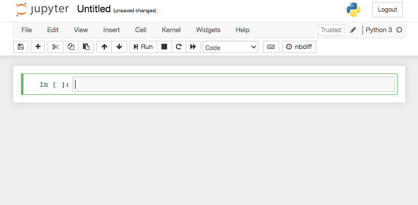
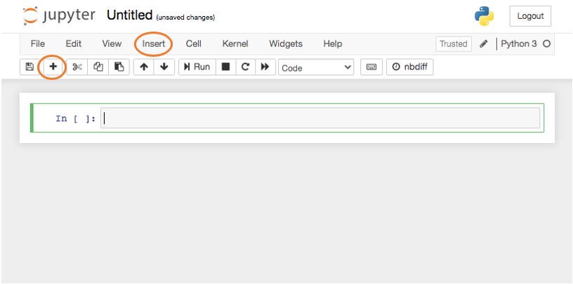
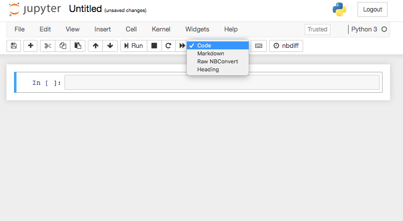
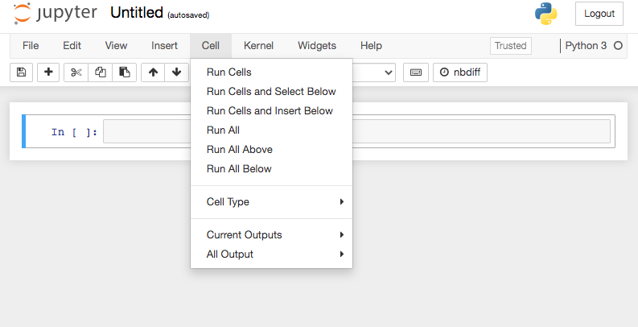
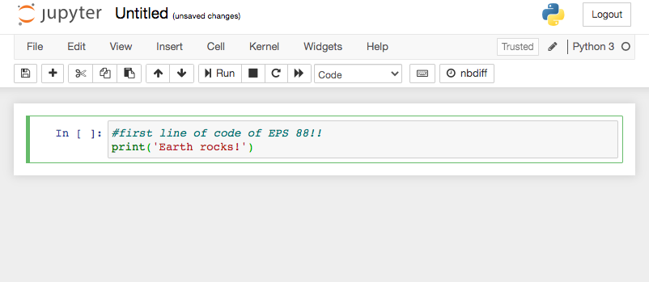
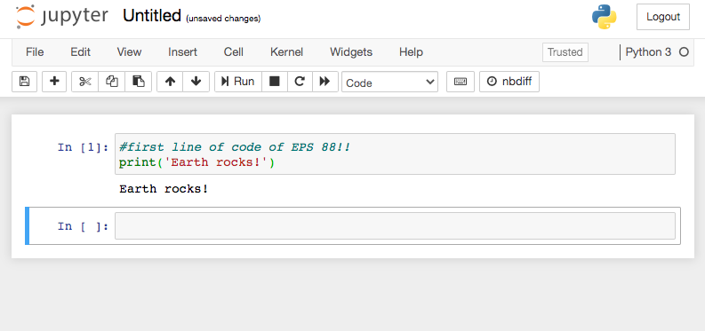

1.1 Introduction to a Jupyter Notebook¶
Goals: Introduce the workflow of the class. Get acquainted with Jupyter Notebooks.
Outline:
Jupyter Notebooks
Watch this video about Jupyter Notebooks

Jupyter Notebooks and Jupyter Hub¶
The assignments for this class will use a special programming environment called Jupyter notebooks. A Jupyter notebook is a development environment where you can write, debug, and execute your programs.
Commonly the first task of a programming course is for students to install the required packages and software on their variety of personal devices. This is always a hassle. So to avoid that we will run our Jupyter notebooks with a JupyterHub environment. However, you may in the future wish to install python on your own computer. When that day comes, go to Anaconda and follow the install instructions for your operating system. But for now that won’t be neccessary.
Anatomy of a Jupyter Notebook¶
Here is a blank notebook:

The area highlighted in green is a “cell”. You can add new cells with the plus-sign button or under the Insert tab.

Jupyter notebooks have two basic cell types:
Markdown: for typesetting notes. Here is a “cheatsheet” for markdown typesetting.
Code: for writing python code
Cell types default to ‘Code’ but you change the cell type to ‘Markdown’ with the box labeled ‘Markdown’ on the menu bar.

You “execute” a cell (either typeset or run the code) by clicking on the ‘Run’ button (sideways triangle), select ‘Run Cells’ under the Cell tab, or by holding Shift and typing Return.

In a code block, you can only type valid python statements EXCEPT after a pound sign # everything after that will be ignored.
That is how you write “comments” in your code to remind yourself or tell others what you were thinking:

Then after I run this simple program to print a message:
